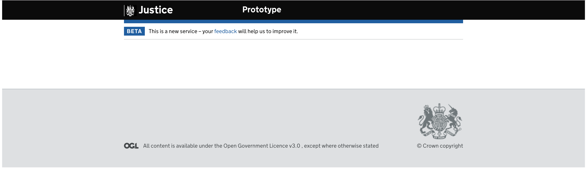
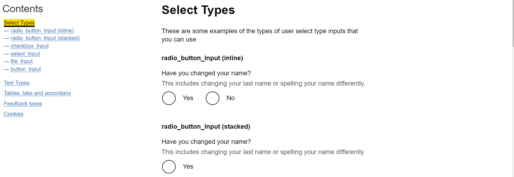
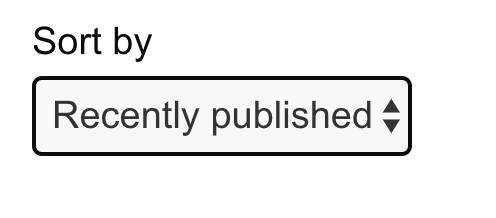
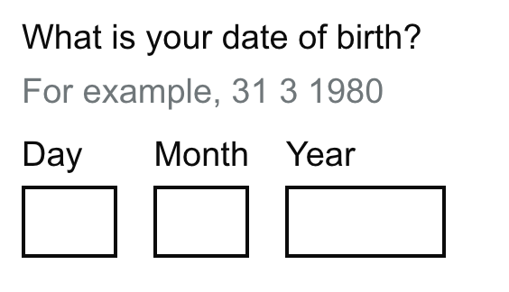

Apply Gov styled components and formats in shiny
Overview
This package provides custom widgets to style R Shiny apps using the GOV.UK design system.
To view details and advice on how to use the GOV.UK components please visit https://design-system.service.gov.uk/components/, most components should be available to use through this package.
Installation
You can install the latest stable version from CRAN
install.packages("shinyGovstyle")If you want to make use of the development version then install directly from GitHub.
remotes::install_github("moj-analytical-services/shinyGovstyle")This is also available on conda
conda install r-shinygovstyleTo use error and word count elements you will need to load useShinyjs from shinyjs in your ui.R file
shinyjs::useShinyjs()Contributing
Ideas, bug reports, and requests for new components should be raised as GitHub issue. It’s often worth checking the existing issues log incase there is already an existing discussion you can conrtibute to.
More details on contributing can be found in the CONTRIBUTING.md file.
This package is also released with a Contributor Code of Conduct. By contributing to this project, you agree to abide by its terms.
Available components
The package contains an example dashboard you can run yourself, showcasing available components
shinyGovstyle::run_example()Full list of available components:
- Gov style layout
- Banner
- Contents links
- Header text
- Radio button
- Checkbox
- Button
- Select
- Date
- File input
- Text input
- Text area input
- Warning
- Insert text
- Value box
- Details
- Panel
- Notification Banner
- Accordion
- Table
- Tabs
- Summary List
- Cookie Banner
- Skip to main
- Tags
- Errors
Gov style layout
Create a gov style look to the page with a header, footer, font and layout: 
ui <- fluidPage(
#font(),
shinyGovstyle::header("Justice", "Prototype", logo="shinyGovstyle/images/moj_logo.png"),
gov_layout(size = "full",
tags$br(),
tags$br(),
tags$br(),
tags$br(),
tags$br()
),
footer(TRUE)
)
server <- function(input, output, session) {}Note: You can only use gov.uk font on service.gov.uk (see https://design-system.service.gov.uk/styles/typography/)
Banner
Add a banner to the header to state in beta or alpha :

ui <- fluidPage(
shinyGovstyle::header("Justice", "Prototype", logo="shinyGovstyle/images/moj_logo.png"),
banner("banner", "beta", 'This is a new service – your <a class="govuk-link" href="#">feedback</a> will help us to improve it.'),
gov_layout(size = "full",
tags$br(),
tags$br(),
tags$br(),
tags$br(),
tags$br()
),
footer(TRUE)
)
server <- function(input, output, session) {}Contents links
Create contents and subcontents links to sidebar to navigate page.

Important: contents_link() requires the following UI structure to enable the js to work as it relies on the IDs for each section to then point a users focus to. This can also be found in run_example():
shiny::fluidpage(
shinygovstyle::header(
main_text = "example",
secondary_text = "user examples",
logo = "shinygovstyle/images/moj_logo.png"
),
gov_row(
shiny::column(
width = 3,
id = "nav", # DO NOT REMOVE ID
shiny::tags$div(
id = "govuk-contents-box", # DO NOT REMOVE ID
class = "govuk-contents-box", # DO NOT REMOVE CLASS
shiny::tags$h2("contents"),
# CONTENTS LINKS GO HERE
)
),
shiny::column(
width = 9,
id = "main-col", # DO NOT REMOVE ID
shiny::tabsetpanel(
type = "hidden",
id = "tab-container", # DO NOT REMOVE ID
# TAB PANELS GO HERE
)
)
)
)You can create a content links without subcontents links:
contents_link(
link_text = "Cookies",
input_id = "cookies_button") Or with subcontents links:
contents_link(
link_text = "Feedback types",
input_id = "feedback_types_button",
subcontents_text_list = c("tag_Input", "details"))If you use subcontents_text_list without specifying subcontents_id_list then the subcontents links will automatically link to shinyGovstyle::heading_text() elements where the header label matches the subcontents_text_list label.
Use subcontents_id_list to link a subcontents link to a shinyGovstyle::heading_text() with a custom id argument. The order needs to match that of subcontents_text_list.
Add as a NA to your vector any subcontents links where you still want to use the automatic link id for.
contents_link(
link_text = "Tables, tabs and accordions",
input_id = "tables_tabs_and_accordions_button",
subcontents_text_list = c("govTable", "govTabs", "button_Input"),
subcontents_id_list = c(NA, NA, "button_input_tables_tabs_accordions")
)Contents links will need a shiny::observeEvent() in the server to switch between tabset panels.
ui <- shiny::fluidPage(
shinyGovstyle::header(
main_text = "Example",
secondary_text = "User Examples",
logo = "shinyGovstyle/images/moj_logo.png"
),
gov_row(
shiny::column(
width = 3,
id = "nav", # DO NOT REMOVE ID
shiny::tags$div( # DO NOT REMOVE DIV
shiny::tags$h2("Contents"),
contents_link(
"Tables, tabs and accordions",
"tables_tabs_and_accordions_button",
),
contents_link("Feedback types", "feedback_types_button"),
)
),
shiny::column(
width = 9,
id = "main_col", # DO NOT REMOVE ID
shiny::tabsetPanel(
type = "hidden",
id = "tab-container", # DO NOT REMOVE ID
shiny::tabPanel(
"Tables, tabs and accordions",
value = "tables_tabs_and_accordions",
gov_layout(size = "Tables, tabs and accordions",
heading_text("Tables, tabs and accordions", size = "l"))
),
shiny::tabPanel(
"Feedback Types",
value = "feedback_types",
gov_layout(size = "two-thirds",
heading_text("Feedback types", size = "l"))
),
)
)
)
)
server <- function(input, output, session) {
shiny::observeEvent(input$tables_tabs_and_accordions_button, {
shiny::updateTabsetPanel(session, "tab-container", selected = "tables_tabs_and_accordions")
})
shiny::observeEvent(input$feedback_types_button, {
shiny::updateTabsetPanel(session, "tab-container", selected = "feedback_types")
})
}
shiny::shinyApp(ui = ui, server = server)
}Subcontents links work automatically and do not need to a shiny::observeEvent() in the server.
Heading text
Use heading text to create headings.

You can adjust the text size by setting size to ‘xl’, ‘l’, ‘m’, or ‘s’. size defaults to ‘xl’.
heading_text(text_input = "I am the default extra large text", size = "xl"),
heading_text(text_input = "I am large text", size = "l"),
heading_text(text_input = "I am medium text", size = "m"),
heading_text(text_input = "I am small text", size = "s")You can use id to create a custom id to link with subcontents_id_list from shinyGovstyle::contents_link. This can be helpful when you have identically named headings.
heading_text(text_input = "I am the default extra large text", id = "custom_id")Radio button
Create a gov style radio button : 
radio_button_Input(inputId = "name_changed", label = "Have you changed your name?",
choices= c("Yes", "No"), inline = TRUE,
hint_label = "This includes changing your last name or spelling your name differently.")Checkbox
Turn checkboxes into gov style ones : 
checkbox_Input(
inputId = "checkID",
cb_labels = c("Waste from animal carcasses", "Waste from mines or quarries", "Farm or agricultural waste"),
checkboxIds = c("op1", "op2", "op3"),
label = "Which types of waste do you transport?",
hint_label = "Select all that apply.")Note that you currently access the values separately through the inputIds you supply or all values through the main inputID.
Button
Gov style button with different styles : 
shinyGovstyle::button_Input(inputId = "btn1", label = "default"),
shinyGovstyle::button_Input(inputId = "btn1", label = "start", type = "start"),
shinyGovstyle::button_Input(inputId = "btn1", label = "secondary", type = "secondary"),
shinyGovstyle::button_Input(inputId = "btn1", label = "warning", type = "warning")Select
Gov style drop down select : 
shinyGovstyle::select_Input(
inputId = "sorter",
label = "Sort by",
select_text = c("Recently published", "Recently updated", "Most views", "Most comments"),
select_value = c("published", "updated", "view", "comments"))Date
Gov style date input 
date_Input(
inputId = "date1",
label = "What is your date of birth?",
hint_label = "For example, 31 3 1980")Note that you currently access the individual values by adding an affix of _day, _month and _year or the full date in dd/mm/yy by using the inputID.


Text area input
Gov style text area input component 
text_area_Input(
inputId = "text_area",
label = "Can you provide more detail?",
hint_label = "Do not include personal or financial information, like your National Insurance number or credit card details.")You can also add a word count to the options, which requires an additional argument in the server : 
ui <- fluidPage(
shinyjs::useShinyjs(),
shinyGovstyle::header("Justice", "", logo="shinyGovstyle/images/moj_logo.png"),
gov_layout(size = "full",
text_area_Input(
inputId = "text_area",
label = "Can you provide more detail?",
hint_label = "Do not include personal or financial information, like
your National Insurance number or credit card details.",
word_limit = 300)
),
footer(TRUE)
)
# Define server logic required to draw a histogram
server <- function(input, output, session) {
observeEvent(input$text_area,
word_count(inputId = "text_area", input = input$text_area, word_limit = 300)
)
}Warning
Gov style warning component 
warning_text(inputId = "warn", text = "You can be fined up to £5,000 if you do not register.")Insert text
Gov style insert text component 
insert_text(inputId = "insertId",
text = "It can take up to 8 weeks to register a lasting power of attorney
if there are no mistakes in the application.")Value box
Gov style value box component 
value_text(
inputId = "valueId",
value = "1,000,000",
text = "This is the latest value for the selected inputs.",
colour = "purple"
)Details
Gov style details component 
details(
inputId = "detID",
label = "Help with nationality",
help_text = "We need to know your nationality so we can work out which elections you’re
entitled to vote in. If you cannot provide your nationality, you’ll have to
send copies of identity documents through the post.")Panel
Gov style panel component 
panel_output(
inputId = "panId",
main_text = "Application complete",
sub_text = "Your reference number <br> <strong>HDJ2123F</strong>")
Accordion
Gov style accordion component 
accordion(
"acc1",
c("Writing well for the web",
"Writing well for specialists",
"Know your audience",
"How people read"
),
c("This is the content for Writing well for the web.",
"This is the content for Writing well for specialists.",
"This is the content for Know your audience.",
"This is the content for How people read."
))
Tabs
Gov style tabs component 
# Create an example dataset
tabs <- c(rep("Past Day", 3),
rep("Past Week", 3),
rep("Past Month", 3),
rep("Past Year", 3))
Case_manager <- rep(c("David Francis", "Paul Farmer", "Rita Patel"),4)
Cases_open <- c(3, 1, 2, 24, 16, 24, 98, 122, 126, 1380, 1129, 1539)
Cases_closed <- c(0, 0, 0, 18, 20, 27, 95, 131, 142, 1472, 1083, 1265)
data <- data.frame(tabs, Case_manager, Cases_open, Cases_closed)
ui <- fluidPage(
shinyGovstyle::header(
main_text = "Example",
secondary_text = "User Examples",
logo="shinyGovstyle/images/moj_logo.png"),
shinyGovstyle::gov_layout(size = "two-thirds",
shinyGovstyle::govTabs("tabsID", data, "tabs")),
shinyGovstyle::footer(full = TRUE)
)
server <- function(input, output, session) {}
shinyApp(ui = ui, server = server)Summary List
Gov style summary list 
# Create an example dataset
headers <- c("Name", "Date of birth", "Contact information", "Contact details")
info <- c(
"Sarah Philips",
"5 January 1978",
"72 Guild Street <br> London <br> SE23 6FH",
"07700 900457 <br> sarah.phillips@example.com")
ui <- fluidPage(
shinyGovstyle::header(
main_text = "Example",
secondary_text = "User Examples",
logo="shinyGovstyle/images/moj_logo.png"),
shinyGovstyle::gov_layout(size = "two-thirds",
shinyGovstyle::gov_summary("sumID", headers, info, action = TRUE)),
shinyGovstyle::footer(full = TRUE)
)
server <- function(input, output, session) {}
shinyApp(ui = ui, server = server)Cookie Banner
Gov style cookie banner 
ui <- fluidPage(
shinyGovstyle::header(
main_text = "Example",
secondary_text = "User Examples",
logo="shinyGovstyle/images/moj_logo.png"),
#Needs shinyjs to work
shinyjs::useShinyjs(),
shinyGovstyle::cookieBanner("The best thing"),
shinyGovstyle::gov_layout(size = "two-thirds"),
shinyGovstyle::footer(full = TRUE)
)
server <- function(input, output, session) {
#Need these set of observeEvent to create a path through the cookie banner
observeEvent(input$cookieAccept, {
shinyjs::show(id = "cookieAcceptDiv")
shinyjs::hide(id = "cookieMain")
})
observeEvent(input$cookieReject, {
shinyjs::show(id = "cookieRejectDiv")
shinyjs::hide(id = "cookieMain")
})
observeEvent(input$hideAccept, {
shinyjs::toggle(id = "cookieDiv")
})
observeEvent(input$hideReject, {
shinyjs::toggle(id = "cookieDiv")
})
observeEvent(input$cookieLink, {
#Need to link here to where further info is located. You can
#updateTabsetPanel to have a cookie page for instance
})
}
shinyApp(ui = ui, server = server)Skip to main
Add an accessible ‘Skip to main content’ link which is typically used by keyboard-only users to bypass content and navigate directly to the main content of a page. It is only visible to users ‘tabbing’ over the feature, otherwise it is hidden:

Important: your main column will need an id of “main_col” for this to work
This feature is generally positioned after the cookie banner and below the header. See example below:
ui <- fluidPage(
cookieBanner("Run Example"),
skip_to_main(),
shinyGovstyle::header(
main_text = "Example",
secondary_text = "User Examples",
logo="shinyGovstyle/images/moj_logo.png"
),
shinyjs::useShinyjs(), # shinyjs is needed to manage visibility of elements
gov_row(
shiny::column(
width = 3,
id = "nav",
# Contents box
shiny::tags$div(
id = "govuk-contents-box", #DO NOT REMOVE ID
class = "govuk-contents-box", #DO NOT REMOVE CLASS
shiny::tags$h2("Contents"),
p("Your contents links go here"),
)
),
shiny::column(
width = 9,
id = "main_col",
shiny::tabsetPanel(
type = "hidden",
id = "tab-container", # DO NOT REMOVE ID
shiny::tabPanel(
"Your main content",
value = "your_main_content",
gov_layout(
size = "two-thirds",
heading_text("Your main content", size = "l"),
p("Your main content goes here")
)
)
)
)
)
)
server <- function(input, output, session){
}
shinyApp(ui = ui, server = server)Tags
Add a gov style tag component 
tag_Input(inputId = "tag1", text = "Default"),
tag_Input(inputId = "tag2", text = "Grey", colour = "grey"),
tag_Input(inputId = "tag3", text = "Green", colour = "green"),
tag_Input(inputId = "tag4", text = "Turquoise", colour = "turquoise"),
tag_Input(inputId = "tag5", text = "Blue", colour = "blue"),
tag_Input(inputId = "tag6", text = "Light-blue", colour = "light-blue"),
tag_Input(inputId = "tag7", text = "Purple", colour = "purple"),
tag_Input(inputId = "tag8", text = "Pink", colour = "pink"),
tag_Input(inputId = "tag9", text = "Red", colour = "red"),
tag_Input(inputId = "tag10", text = "Orange", colour = "orange"),
tag_Input(inputId = "tag11", text = "Yellow", colour = "yellow")Errors
Add errors to components when not filled in correctly. Most input components have this as an option to add 
ui <- fluidPage(
shinyjs::useShinyjs(),
shinyGovstyle::header("Justice", "", logo="shinyGovstyle/images/moj_logo.png"),
gov_layout(size = "full",
text_area_Input(
"text_area",
"Can you provide more detail?",
"Do not include personal or financial information, like your National Insurance number or credit card details.",
word_limit = 300, error = TRUE, error_message = "Error"),
button_Input("btn1", "Toggle error")
),
footer(TRUE)
)
server <- function(input, output, session) {
err <<- FALSE
observeEvent(input$btn1,{
if (err) {
err <<- FALSE
error_off("text_area")
}
else {
err <<- TRUE
error_on("text_area", "You have an error")
}
}
)
}